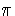

The phasing method generates a single sideband signal, given
mathematically as
cos(()t) , where
the + (-) sign gives the upper (lower) sideband, and
= 2fc where fc is the carrier frequency.
Similarly,
= 2fa where fa is the audio modulating frequency.
The cosine can be written as
cos(( )t) = cos(t)cos(t) sin(t)sin(t),
(1)
the basic equation of the phasing method.
The multiplications on the right-hand side are accomplished using
balanced modulators, and the two audio frequencies (as well as
the two radio frequencies) must be 90o out of phase and
of equal amplitude.
I will assume that the radio frequencies are exactly 90o
out of phase, and of equal amplitude.
Using the usual
complex notation with
VAe jt to be one audio
signal, and
VBe jt to be the other, the result
of using a nonideal phasing network will be
Re[cos(t)VAe jt + sin(t)VBe jt] = Re[e j( + )t(VA - jVB) + e - j( - )t(VA + jVB)],
(2)
and the sideband suppression (or enhancement) is given by
20
(3)
Notice if |VA| equals |VB| , that is if the two signals have
equal amplitude then for a phase error of , the suppression
in dB is simply,